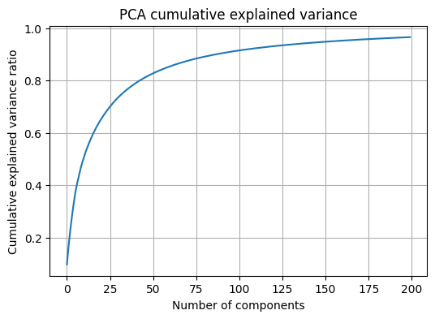
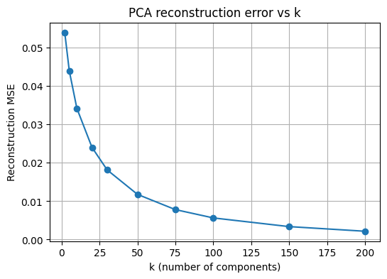
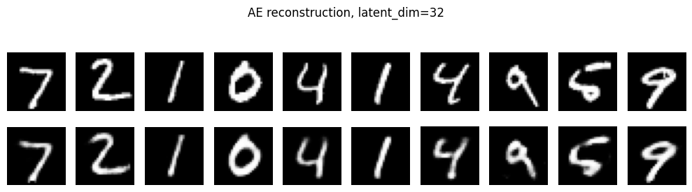
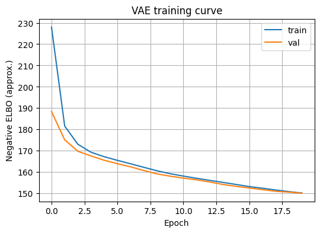
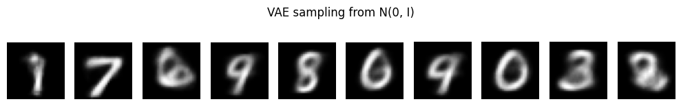
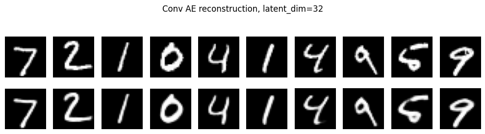

MLDL 차원축소 - 사례분석
MLDL 사례분석 (차원축소)
이 노트북 코드는 차원축소와 비지도 표현학습을 하나의 흐름으로 실습하기 위해 구성된 코드이다. 전체 구성은 (1) MNIST 데이터 준비, (2) PCA 기반 재구성 실습, (3) 오토인코더 기반 재구성 실습, (4) VAE 기반 확률적 표현과 샘플링 실습으로 이어지는 구조이다. 각 단계는 “저차원 표현을 만들고 다시 원자료를 복원한다”는 공통 관점을 유지하면서, 선형 방법과 신경망 기반 방법의 차이를 비교하도록 설계된 코드이다.
1. 데이터 & 전처리
이 셀은 차원축소와 표현학습 실습에 필요한 계산 환경을 준비하는 셀이다. Numpy와 Matplotlib은 배열 연산과 시각화를 위한 기본 도구이며, scikit-learn의 PCA는 선형 차원축소를 구현하기 위한 도구이다.
TensorFlow와 Keras는 오토인코더 및 VAE 같은 신경망 기반 표현모형을 학습하기 위한 프레임워크이다. 실험의 재현성을 위해 난수 시드를 고정하는 설정이며, 실행 환경 확인을 위해 TensorFlow 버전을 출력하는 구성이다.
기본 설정 및 공통 import
import numpy as np
import matplotlib.pyplot as plt
from sklearn.decomposition import PCA
from sklearn.metrics import mean_squared_error, mean_absolute_error
import tensorflow as tf
from tensorflow import keras
from tensorflow.keras import layers
np.random.seed(42)
tf.random.set_seed(42)
print("TensorFlow:", tf.__version__)데이터 로드 및 전처리
이 셀은 MNIST 학습·테스트 데이터를 불러오고, 학습 가능한 형태로 변환하는 전처리 셀이다. MNIST는 28×28 흑백 이미지이므로 입력은 원래 2차원 격자 형태이다. 학습 안정성을 위해 픽셀 값을 0~255 범위에서 0~1 범위로 정규화하는 방식이며, 자료형을 float32로 맞추는 방식이다.
이후 검증셋을 훈련 데이터에서 분리하여 과적합 여부를 확인할 수 있게 구성하는 방식이다. PCA와 Dense 기반 모델을 위해 28×28을 784 차원의 벡터로 펼쳐 \(X \in R^{n×784}\) 형태로 만드는 과정이 포함되는 셀이다. 출력으로 훈련·검증·테스트의 크기와 펼친 차원 784를 확인하는 셀이다.
# MNIST 로드
(x_train, y_train), (x_test, y_test) = keras.datasets.mnist.load_data()
# [0,1] 정규화
x_train = x_train.astype("float32") / 255.0
x_test = x_test.astype("float32") / 255.0
# 검증셋 분리
n_val = 10000
x_val, y_val = x_train[-n_val:], y_train[-n_val:]
x_train_sub, y_train_sub = x_train[:-n_val], y_train[:-n_val]
# PCA 및 Dense AE를 위한 벡터화
x_train_flat = x_train_sub.reshape(len(x_train_sub), -1)
x_val_flat = x_val.reshape(len(x_val), -1)
x_test_flat = x_test.reshape(len(x_test), -1)
print("Train:", x_train_sub.shape, "Val:", x_val.shape, "Test:", x_test.shape)
print("Flat dim:", x_train_flat.shape[1])원본 데이터 보기
시각화 및 평가 함수
이 셀은 실습 전반에서 반복되는 시각화와 평가를 함수로 묶어 두는 셀이다. 여러 장 이미지를 한 줄로 보여주는 함수와, 원본 이미지와 재구성 이미지를 위아래로 나란히 비교하는 함수가 포함되는 구성이다.
재구성 품질을 정량화하기 위해 MSE와 MAE를 계산하는 함수가 포함되는 구성이다. 이 셀은 이후 PCA, AE, VAE 실험에서 결과를 동일한 기준으로 비교하게 하는 기반 셀이다.
def show_images_grid(images, n=10, title=""):
plt.figure(figsize=(n, 1.6))
for i in range(n):
ax = plt.subplot(1, n, i+1)
ax.imshow(images[i], cmap="gray")
ax.axis("off")
plt.suptitle(title)
plt.tight_layout()
plt.show()
def show_reconstructions(x_orig, x_recon, n=10, title=""):
plt.figure(figsize=(n, 3.0))
for i in range(n):
ax = plt.subplot(2, n, i+1)
ax.imshow(x_orig[i], cmap="gray")
ax.axis("off")
ax = plt.subplot(2, n, i+1+n)
ax.imshow(x_recon[i], cmap="gray")
ax.axis("off")
plt.suptitle(title)
plt.tight_layout()
plt.show()
def recon_metrics(x_true_flat, x_pred_flat, prefix=""):
mse = mean_squared_error(x_true_flat, x_pred_flat)
mae = mean_absolute_error(x_true_flat, x_pred_flat)
print(f"{prefix}MSE: {mse:.6f} MAE: {mae:.6f}")
return mse, mae2. PCA 차원축소
PCA는 중심화된 데이터 X를 주성분 축 W로 투영해 저차원 점수 Z를 만들고, 다시 원공간으로 복원하는 관점에서 설명할 수 있다.
핵심 관계는 \(Z = XW\) (투영)과 \(\hat{X} = ZW^T =XWW^T\) (복원)으로 표현된다. 주성분 개수 k가 커질수록 \(\hat X\) 가 X에 가까워지고 재구성 오차가 감소하는 구조이다.
PCA 재구성 실습 1개
이 셀은 PCA를 적합하여 누적 설명분산 곡선을 확인하고, 서로 다른 k에서 재구성 결과가 어떻게 달라지는지 시각화하는 셀이다. 구현은 훈련 데이터에 PCA를 적합한 뒤, 테스트 샘플을 k차원으로 변환하고 다시 역변환하여 재구성 이미지를 얻는 방식이다.
해석은 k가 작을수록 숫자 형태가 흐려지고 윤곽만 남는 경향이 나타나며, k가 커질수록 원본과 유사한 디테일이 복원되는 경향이 나타나는 구조이다. 동시에 MSE와 MAE가 k 증가에 따라 감소하는 경향이 나타나는 구조이다.
# PCA는 중심화가 기본적으로 적용된다
# 표준화(분산 스케일링)는 여기서는 생략하고, 이미지 픽셀 자체로 진행한다
pca_full = PCA(n_components=200, random_state=42)
pca_full.fit(x_train_flat)
explained = pca_full.explained_variance_ratio_
cum_explained = np.cumsum(explained)
plt.figure(figsize=(6,4))
plt.plot(cum_explained)
plt.xlabel("Number of components")
plt.ylabel("Cumulative explained variance ratio")
plt.title("PCA cumulative explained variance")
plt.grid(True)
plt.show()
# 다양한 k에서 재구성 비교
k_list = [2, 10, 30, 50, 100]
idx = np.random.choice(len(x_test_flat), size=10, replace=False)
x_sample = x_test_flat[idx]
x_sample_img = x_test[idx]
for k in k_list:
pca = PCA(n_components=k, random_state=42)
pca.fit(x_train_flat)
z = pca.transform(x_sample)
x_hat = pca.inverse_transform(z)
x_hat_img = x_hat.reshape(-1, 28, 28)
show_reconstructions(x_sample_img, x_hat_img, n=10, title=f"PCA reconstruction, k={k}")
recon_metrics(x_sample, x_hat, prefix=f"[PCA k={k}] ")
이 그림은 PCA로 MNIST 이미지를 k개의 주성분만 남겨서 저차원으로 압축했다가 다시 복원했을 때 재구성이 어떻게 달라지는지를 보여주는 그림이다. 각 블록에서 윗줄은 원본, 아랫줄은 PCA 재구성 이미지이다.
k=2 재구성의 의미이다: 주성분이 2개뿐이므로 784차원 정보를 2차원으로 극단적으로 압축한 상태이다. 그래서 숫자의 세부 획 정보는 대부분 사라지고, 대략적인 밝기 분포와 전체 윤곽 정도만 남는다. 여러 숫자가 서로 비슷하게 뭉개져 보이는 것은 2개의 축으로 표현할 수 있는 변동이 매우 제한적이기 때문이라는 해석이 된다.
k=10 재구성의 의미이다: 주성분이 10개로 늘어나면서 숫자별 윤곽이 훨씬 분명해진다. 다만 획의 끝부분, 굵기, 미세한 곡선 같은 고주파 정보는 아직 충분히 복원되지 않아 약간 흐릿하고 회색 배경이 남는 모습이 나타난다. 이는 중요한 변동(큰 구조)은 상위 몇 개 성분에서 설명되지만, 세부 디테일은 더 많은 성분이 필요하다는 점을 보여주는 결과이다.
k=100 재구성의 의미이다: 주성분이 100개이면 원본과 매우 유사하게 복원된다. 숫자 모양이 거의 동일하게 보이고, 흐림도 크게 줄어든다. 이 수준에서는 데이터의 주요 변동뿐 아니라 상당한 수준의 디테일까지 포함되며, 재구성 오차가 크게 감소한 상태라는 해석이 된다.
이 그림이 전달하는 핵심 메시지이다: PCA는 Z=XW로 저차원 표현을 만든 뒤 \(\hat{X} = ZW^T =XWW^T\) 로 복원하는데, k가 작을수록 정보 손실이 커져 재구성이 흐려지고, k가 커질수록 정보가 더 보존되어 재구성이 원본에 가까워진다는 사실을 시각적으로 보여주는 그림이다. 동시에 “상위 몇 개 주성분이 큰 구조를 잡고, 나머지 성분이 디테일을 채운다”는 분산 설명 관점과 재구성 관점이 연결되는 결과이다.


PCA 차원 k에 따른 재구성 오차 곡선
이 셀은 여러 k 값에 대해 재구성 MSE를 계산하여 곡선으로 나타내는 셀이다. 구현은 k 격자를 정하고, 각 k에서 PCA를 다시 적합한 뒤 테스트 일부에 대해 재구성 MSE를 계산하는 방식이다.
해석은 k가 증가할수록 재구성 오차가 단조 감소하는 경향이 나타나며, 어느 지점 이후에는 감소 폭이 완만해지는 형태가 나타나는 구조이다. 이 완만해지는 구간은 재구성 관점에서 추가 성분의 효용이 줄어드는 구간으로 해석할 수 있는 구조이다.
k_grid = [2, 5, 10, 20, 30, 50, 75, 100, 150, 200]
mse_list = []
# 테스트 전체에서 비교하면 시간이 늘어나므로 일부 샘플로 평가한다
m = 5000
x_eval = x_test_flat[:m]
for k in k_grid:
pca = PCA(n_components=k, random_state=42)
pca.fit(x_train_flat)
x_hat = pca.inverse_transform(pca.transform(x_eval))
mse = mean_squared_error(x_eval, x_hat)
mse_list.append(mse)
plt.figure(figsize=(6,4))
plt.plot(k_grid, mse_list, marker="o")
plt.xlabel("k (number of components)")
plt.ylabel("Reconstruction MSE")
plt.title("PCA reconstruction error vs k")
plt.grid(True)
plt.show()
공분산 PCA vs 상관 PCA 비교 셀
이 셀은 표준화 여부가 PCA 결과에 미치는 영향을 확인하는 셀이다. 공분산 PCA는 원자료 X에서 공분산 구조를 기반으로 주성분을 찾는 방식이며, 상관 PCA는 각 변수(여기서는 각 픽셀)를 표준화하여 분산을 1로 맞춘 뒤 상관 구조를 기반으로 주성분을 찾는 방식이다.
구현은 StandardScaler로 표준화한 데이터에서 PCA를 수행하고, 재구성 후 다시 원 스케일로 되돌려 MSE를 비교하는 방식이다. 해석은 MNIST는 모든 변수가 같은 단위의 픽셀 강도이므로 표준화 효과가 다른 탭울러 데이터만큼 크지 않을 수 있지만, 원리적으로는 스케일이 다른 변수가 섞인 데이터에서는 상관 PCA가 주성분 방향을 크게 바꿀 수 있다는 점을 확인하는 목적의 셀이다.
from sklearn.preprocessing import StandardScaler
# 상관 PCA를 위한 표준화기(픽셀별 z-score)
scaler = StandardScaler(with_mean=True, with_std=True)
x_train_std = scaler.fit_transform(x_train_flat)
x_test_std = scaler.transform(x_test_flat)
# 비교용: 동일한 k_grid에서 공분산 PCA(원본) vs 상관 PCA(표준화 후)
k_grid = [2, 5, 10, 20, 30, 50, 75, 100, 150, 200]
m = 5000
x_eval = x_test_flat[:m]
x_eval_std = x_test_std[:m]
mse_cov_list = []
mse_cor_list = []
for k in k_grid:
# 공분산 PCA
pca_cov = PCA(n_components=k, random_state=42)
pca_cov.fit(x_train_flat)
x_hat_cov = pca_cov.inverse_transform(pca_cov.transform(x_eval))
mse_cov_list.append(mean_squared_error(x_eval, x_hat_cov))
# 상관 PCA = 표준화 후 PCA, 복원 후 원래 스케일로 역변환
pca_cor = PCA(n_components=k, random_state=42)
pca_cor.fit(x_train_std)
x_hat_std = pca_cor.inverse_transform(pca_cor.transform(x_eval_std))
x_hat_cor = scaler.inverse_transform(x_hat_std)
mse_cor_list.append(mean_squared_error(x_eval, x_hat_cor))
plt.figure(figsize=(6,4))
plt.plot(k_grid, mse_cov_list, marker="o", label="Covariance PCA")
plt.plot(k_grid, mse_cor_list, marker="o", label="Correlation PCA")
plt.xlabel("k (number of components)")
plt.ylabel("Reconstruction MSE")
plt.title("Covariance PCA vs Correlation PCA (MNIST)")
plt.grid(True)
plt.legend()
plt.show()
# 대표 k에서 재구성 비교(이미지)
k_show = 30
idx = np.random.choice(len(x_test_flat), size=10, replace=False)
x_sample = x_test_flat[idx]
x_sample_img = x_test[idx]
# 공분산 PCA 재구성
pca_cov = PCA(n_components=k_show, random_state=42).fit(x_train_flat)
x_hat_cov = pca_cov.inverse_transform(pca_cov.transform(x_sample))
# 상관 PCA 재구성
pca_cor = PCA(n_components=k_show, random_state=42).fit(x_train_std)
x_hat_std = pca_cor.inverse_transform(pca_cor.transform(scaler.transform(x_sample)))
x_hat_cor = scaler.inverse_transform(x_hat_std)
show_reconstructions(
x_sample_img, x_hat_cov.reshape(-1, 28, 28),
n=10, title=f"Covariance PCA reconstruction, k={k_show}"
)
recon_metrics(x_sample, x_hat_cov, prefix=f"[Cov PCA k={k_show}] ")
show_reconstructions(
x_sample_img, x_hat_cor.reshape(-1, 28, 28),
n=10, title=f"Correlation PCA reconstruction, k={k_show}"
)
recon_metrics(x_sample, x_hat_cor, prefix=f"[Cor PCA k={k_show}] ")

[Cov PCA k=30] MSE: 0.020638 MAE: 0.077749

[Cor PCA k=30] MSE: 0.027271 MAE: 0.088686
3. 오토인코더 차원축소
오토인코더는 인코더 \(z=f_{\phi}(x)\) 와 디코더 \(\hat x=g_{\theta}(z)\) 로 구성되며, 재구성 손실 \(loss(x, \hat x)\) 를 최소화하여 잠재표현 z를 학습하는 구조이다. 병목 구조를 통해 \(k<p\) 인 잠재차원에서 정보를 압축하게 하는 점이 차원축소와 대응되는 구조이다.
DENCE Autoencoder 모델 정의 및 학습
이 셀은 784차원 벡터 입력을 32차원 잠재벡터로 압축한 뒤 다시 784차원으로 복원하는 Dense AE를 학습하는 셀이다. 구현은 Dense 층으로 인코더와 디코더를 구성하고, 손실함수로 MSE를 사용하여 x와 \(\hat x\) 의 차이를 최소화하는 방식이다.
EarlyStopping은 검증 손실이 개선되지 않을 때 학습을 중단하고 최적 가중치로 되돌리는 방식이며, 과적합을 줄이는 실용적 장치이다. 해석은 학습 곡선에서 훈련 손실과 검증 손실이 함께 감소하는지, 혹은 훈련 손실만 감소하고 검증 손실이 정체·증가하는지로 과적합 신호를 판단하는 구조이다.
input_dim = 28 * 28
latent_dim = 32
def build_dense_ae(input_dim=784, latent_dim=32):
inp = keras.Input(shape=(input_dim,))
x = layers.Dense(256, activation="relu")(inp)
x = layers.Dense(64, activation="relu")(x)
z = layers.Dense(latent_dim, name="latent")(x)
x = layers.Dense(64, activation="relu")(z)
x = layers.Dense(256, activation="relu")(x)
out = layers.Dense(input_dim, activation="sigmoid")(x)
ae = keras.Model(inp, out, name="dense_ae")
encoder = keras.Model(inp, z, name="encoder")
return ae, encoder
ae, encoder = build_dense_ae(input_dim, latent_dim)
ae.compile(optimizer=keras.optimizers.Adam(1e-3), loss="mse")
es = keras.callbacks.EarlyStopping(monitor="val_loss", patience=3, restore_best_weights=True)
history = ae.fit(
x_train_flat, x_train_flat,
validation_data=(x_val_flat, x_val_flat),
epochs=20,
batch_size=256,
callbacks=[es],
verbose=1
)
plt.figure(figsize=(6,4))
plt.plot(history.history["loss"], label="train")
plt.plot(history.history["val_loss"], label="val")
plt.xlabel("Epoch")
plt.ylabel("MSE loss")
plt.title("AE training curve")
plt.legend()
plt.grid(True)
plt.show()이 그래프는 AE가 학습되면서 재구성 손실(MSE)이 어떻게 변하는지를 보여주는 학습 곡선이다. 파란선은 훈련(train) 손실이고 주황선은 검증(val) 손실이다.
초반 급격한 하강의 의미이다: 에폭 0~3 구간에서 손실이 빠르게 감소하는 것은 모델이 입력 이미지의 큰 구조를 빠르게 학습하고 있다는 의미이다. 이 구간은 학습이 정상적으로 진행되고 있다는 전형적인 신호이다.
이후 완만한 감소와 수렴의 의미이다: 에폭이 증가할수록 손실 감소 폭이 줄고 곡선이 평평해지는 것은 학습이 점차 수렴하고 있다는 의미이다. 대략 10 에폭 이후부터는 추가 학습의 이득이 크지 않은 구간으로 해석되는 경향이 있다.
train과 val이 거의 겹치는 의미이다: 훈련 손실과 검증 손실이 비슷한 수준으로 함께 감소하며 마지막까지 큰 간격이 생기지 않는 것은 과적합이 뚜렷하지 않다는 의미이다. 과적합이 발생하면 일반적으로 훈련 손실만 계속 내려가고 검증 손실은 정체하거나 다시 증가하는 형태가 나타난다.
val이 train보다 약간 낮거나 비슷하게 나오는 이유이다: 초반에 검증 손실이 훈련 손실보다 약간 낮게 보일 수 있는데, 이는 배치 구성의 우연한 차이, 훈련 과정의 변동성, 검증셋 난이도 차이 등으로 인해 충분히 발생할 수 있는 자연스러운 현상이다.
정리하면, 이 곡선은 AE가 안정적으로 학습되었고 검증 기준에서도 일반화가 잘 되며, 후반부(대략 10~15 에폭 이후)에는 성능 개선 폭이 작아지는 수렴 상태에 도달했다는 의미이다.
(생략) Epoch 20/20 196/196 - 4s 22ms/step - loss: 0.0082 - val_loss: 0.0083

DENCE AE 재구성 시각화 및 평가 지표
이 셀은 학습된 AE로 테스트 이미지를 재구성하고, 원본과 재구성을 비교하며 MSE·MAE를 계산하는 셀이다. 구현은 테스트 일부를 예측하여 \(\hat x\) 를 만든 뒤 이미지를 28×28로 reshape하여 시각화하는 방식이다. 해석은 PCA와 비교할 때 비선형 AE는 더 복잡한 변환을 학습할 수 있으므로 같은 잠재차원에서도 재구성이 더 좋아질 수 있다는 점을 관찰하는 셀이다. 또한 encoder 출력의 shape를 확인하여 잠재표현 차원이 의도대로 구성되었는지 점검하는 셀이다.
# 재구성
x_hat_test = ae.predict(x_test_flat[:200], verbose=0)
recon_metrics(x_test_flat[:200], x_hat_test, prefix="[AE] ")
# 이미지로 보기
x_orig_img = x_test[:10]
x_hat_img = x_hat_test[:10].reshape(-1, 28, 28)
show_reconstructions(x_orig_img, x_hat_img, n=10, title=f"AE reconstruction, latent_dim={latent_dim}")
# 잠재공간 간단 확인(라벨은 시각화용으로만 사용)
z_test = encoder.predict(x_test_flat[:3000], verbose=0)
print("Latent shape:", z_test.shape)이 그림은 오토인코더(AE) 가 MNIST 테스트 이미지 10장을 잠재차원 k=32 로 압축했다가 다시 복원한 결과를 원본과 나란히 보여주는 그림이다. 위 행이 원본 x이고 아래 행이 재구성 \(\hat{x}\) 이다.
재구성이 전반적으로 잘 된 상태이다: 아래 행의 숫자들이 위 행의 숫자와 형태가 거의 같게 복원되어 있으므로, k=32라는 병목에서도 숫자의 핵심 구조(윤곽, 획의 배치)를 충분히 담아낸 상태라고 해석되는 결과이다.
약간의 흐림과 두꺼워짐은 평균화 효과의 신호이다: 재구성된 숫자에서 획이 원본보다 조금 흐릿하거나 두꺼워진 느낌이 있을 수 있다. 이는 재구성 손실(MSE)을 최소화하는 과정에서 픽셀 단위로 “평균적인” 복원이 유리해지는 성질이 반영된 결과이다. 즉 세밀한 고주파 디테일보다는 큰 구조를 우선 보존하는 방향으로 학습된 상태이다.
숫자별 난이도 차이가 보인다: ‘0’처럼 단순한 폐곡선 구조나 ‘1’처럼 획이 단순한 숫자는 복원이 특히 안정적으로 보이는 경향이 있다. 반면 ‘9’, ’5’처럼 곡선과 교차가 복합적인 숫자는 작은 왜곡이나 흐림이 더 나타나기 쉬운 편이다. 이는 동일한 잠재차원에서 복잡한 형태가 상대적으로 더 많은 정보를 요구하기 때문인 결과이다.
[AE] MSE: 0.008012 MAE: 0.028769

Dense VAE 선택 실습: 모델 정의 및 학습
이 셀은 오토인코더를 확률적 잠재변수 모형으로 확장한 VAE를 구현하는 셀이다. VAE는 인코더가 잠재변수의 점 z를 직접 출력하는 대신 \(q_{\phi}(z|x)\)의 평균 \(z_{mean}\) 과 로그분산 \(z_{logvar}\)를 출력하는 구조이다.
재파라미터화 기법을 통해 \(z=z_{mean} + exp(0.5 z_{logvar}) \epsilon\) 형태로 샘플링하는 구조이다. 학습 목표는 ELBO를 최대화하는 것이며, 손실은 재구성 항과 KL 항의 합으로 나타나는 구조이다. 재구성 항은 \(p_{\theta}(x|z)\) 가 x를 잘 설명하도록 만드는 항이며, KL 항은 \(q_{\phi}(z|x)\)가 사전분포 \(p(z)\)와 가깝도록 만드는 정규화 항이다.
KL 항의 해석은 단순히 재구성만 잘하는 표현이 아니라, 잠재공간이 정리되어 임의의 \(z \sim N(0, I)\) 에서 샘플링이 가능해지는 표현을 학습한다는 점에 있는 셀이다.
latent_dim_vae = 2 # 2로 두면 잠재공간 시각화가 가능하다
class Sampling(layers.Layer):
def call(self, inputs):
z_mean, z_logvar = inputs
eps = tf.random.normal(shape=tf.shape(z_mean))
return z_mean + tf.exp(0.5 * z_logvar) * eps
def build_vae(input_dim=784, latent_dim=2):
# Encoder
inp = keras.Input(shape=(input_dim,))
x = layers.Dense(256, activation="relu")(inp)
x = layers.Dense(64, activation="relu")(x)
z_mean = layers.Dense(latent_dim, name="z_mean")(x)
z_logvar = layers.Dense(latent_dim, name="z_logvar")(x)
z = Sampling()([z_mean, z_logvar])
encoder = keras.Model(inp, [z_mean, z_logvar, z], name="vae_encoder")
# Decoder
z_in = keras.Input(shape=(latent_dim,))
x = layers.Dense(64, activation="relu")(z_in)
x = layers.Dense(256, activation="relu")(x)
out = layers.Dense(input_dim, activation="sigmoid")(x)
decoder = keras.Model(z_in, out, name="vae_decoder")
return encoder, decoder
encoder_vae, decoder_vae = build_vae(input_dim, latent_dim_vae)
def get_x(data):
# data가 (x,) 또는 (x,y) 형태로 들어올 수도 있고, 그냥 x 텐서로 들어올 수도 있음
if isinstance(data, (tuple, list)):
return data[0]
return data
class VAE(keras.Model):
def __init__(self, encoder, decoder, **kwargs):
super().__init__(**kwargs)
self.encoder = encoder
self.decoder = decoder
self.total_loss_tracker = keras.metrics.Mean(name="loss")
self.recon_loss_tracker = keras.metrics.Mean(name="recon_loss")
self.kl_loss_tracker = keras.metrics.Mean(name="kl_loss")
@property
def metrics(self):
return [self.total_loss_tracker, self.recon_loss_tracker, self.kl_loss_tracker]
def train_step(self, data):
x = get_x(data) # 핵심 수정이다
with tf.GradientTape() as tape:
z_mean, z_logvar, z = self.encoder(x, training=True)
x_hat = self.decoder(z, training=True)
# (batch, 784) -> 샘플별 합
bce = keras.backend.binary_crossentropy(x, x_hat) # (batch, 784)
recon = tf.reduce_sum(bce, axis=1) # (batch,)
kl = -0.5 * tf.reduce_sum(
1 + z_logvar - tf.square(z_mean) - tf.exp(z_logvar),
axis=1
) # (batch,)
loss = tf.reduce_mean(recon + kl)
grads = tape.gradient(loss, self.trainable_weights)
self.optimizer.apply_gradients(zip(grads, self.trainable_weights))
self.total_loss_tracker.update_state(loss)
self.recon_loss_tracker.update_state(tf.reduce_mean(recon))
self.kl_loss_tracker.update_state(tf.reduce_mean(kl))
return {m.name: m.result() for m in self.metrics}
def test_step(self, data):
x = get_x(data) # 핵심 수정이다
z_mean, z_logvar, z = self.encoder(x, training=False)
x_hat = self.decoder(z, training=False)
bce = keras.backend.binary_crossentropy(x, x_hat)
recon = tf.reduce_sum(bce, axis=1)
kl = -0.5 * tf.reduce_sum(
1 + z_logvar - tf.square(z_mean) - tf.exp(z_logvar),
axis=1
)
loss = tf.reduce_mean(recon + kl)
self.total_loss_tracker.update_state(loss)
self.recon_loss_tracker.update_state(tf.reduce_mean(recon))
self.kl_loss_tracker.update_state(tf.reduce_mean(kl))
return {m.name: m.result() for m in self.metrics}
vae = VAE(encoder_vae, decoder_vae)
vae.compile(optimizer=keras.optimizers.Adam(1e-3))
history_vae = vae.fit(
x_train_flat,
validation_data=(x_val_flat,), # 이 형태 그대로 사용 가능이다
epochs=20,
batch_size=256,
verbose=1
)
plt.figure(figsize=(6,4))
plt.plot(history_vae.history["loss"], label="train")
plt.plot(history_vae.history["val_loss"], label="val")
plt.xlabel("Epoch")
plt.ylabel("Negative ELBO (approx.)")
plt.title("VAE training curve")
plt.legend()
plt.grid(True)
plt.show()Epoch 20/20 196/196 - 6s 32ms/step - kl_loss: 5.9151 - loss: 150.5069 - recon_loss: 144.5918 - val_kl_loss: 6.0038 - val_loss: 150.1220 - val_recon_loss: 144.1183

VAE 잠재공간 시각화와 샘플링
# 잠재공간 시각화(라벨은 시각화용)
z_mean, z_logvar, z = encoder_vae.predict(x_test_flat[:5000], verbose=0)
plt.figure(figsize=(6,5))
plt.scatter(z_mean[:,0], z_mean[:,1], s=6, c=y_test[:5000], cmap="tab10")
plt.colorbar()
plt.xlabel("z1")
plt.ylabel("z2")
plt.title("VAE latent space (means), colored by label for visualization")
plt.grid(True)
plt.show()
# 잠재공간 보간 예시
i, j = 0, 1
za = z_mean[i]
zb = z_mean[j]
ts = np.linspace(0, 1, 10)
z_interp = np.array([(1-t)*za + t*zb for t in ts])
x_gen = decoder_vae.predict(z_interp, verbose=0).reshape(-1, 28, 28)
show_images_grid(x_gen, n=10, title="VAE interpolation in latent space")
# 사전분포에서 샘플링하여 생성
z_samples = np.random.normal(size=(10, latent_dim_vae))
x_samples = decoder_vae.predict(z_samples, verbose=0).reshape(-1, 28, 28)
show_images_grid(x_samples, n=10, title="VAE sampling from N(0, I)")이 그림은 VAE가 MNIST 각 이미지를 2차원 잠재변수 \(z=(z_1, z_2)\) 로 압축했을 때, 각 이미지의 잠재분포 평균 \(z_{mean}\) 을 좌표평면에 찍은 산점도이다. 점 하나가 이미지 한 장에 해당하는 표현이며, 색은 학습에는 쓰지 않은 정답 라벨을 시각화 목적으로만 덧칠한 결과이다.
첫째, 군집이 보인다는 사실은 VAE가 숫자 이미지의 형태적 유사성을 어느 정도 보존하는 저차원 표현을 학습했다는 의미이다. 같은 숫자(같은 색)의 점들이 특정 영역에 더 많이 모이는 경향이 나타나며, 이는 잠재공간에서 가까운 점일수록 비슷한 모양의 숫자일 가능성이 커지는 구조임을 시사하는 결과이다.
둘째, 군집 간 겹침이 존재한다는 사실은 2차원이라는 강한 병목과 비지도 학습의 한계가 동시에 드러난 결과이다. 예를 들어 3과 5, 4와 9처럼 획 구조가 비슷한 숫자들은 잠재공간에서 구분이 완벽하지 않고 중심부에서 서로 섞여 나타나는 경향이 생기기 쉽다. 이는 모델이 라벨 분리를 목표로 학습한 것이 아니라 재구성 항과 KL 정규화 항의 균형으로 표현을 학습했기 때문에 나타나는 자연스러운 현상이다.
셋째, 바깥쪽으로 비교적 또렷한 덩어리가 형성된 숫자들이 있다는 점은 해당 숫자들의 형태가 다른 숫자들과 구별되는 특징을 갖는다는 의미이다. 예를 들어 ’1’처럼 획이 단순한 숫자나 ’0’처럼 폐곡선 구조가 강한 숫자는 다른 숫자들과 구분되는 방향으로 잠재공간에서 상대적으로 분리된 영역을 형성하는 경향이 나타나기 쉽다. 반대로 획 조합이 다양하고 다른 숫자와 공통 요소가 많은 숫자들은 중심부에 섞이는 경향이 커지는 구조이다.
넷째, 점들이 완전히 흩어지지 않고 연속적인 구름 형태로 분포한다는 사실은 VAE의 KL 항이 잠재공간을 정규분포 N(0,I) 근처로 정리했음을 보여주는 결과이다. 이 성질 때문에 잠재공간에서 보간(interpolation)을 하면 중간 좌표에서도 그럴듯한 숫자 이미지가 생성될 가능성이 커지는 구조이다.
정리하면, 이 그림은 VAE가 2차원 잠재공간에서 숫자 형태의 주요 변동을 요약해 군집 구조를 만들었지만, 라벨 분리를 직접 목표로 하지 않았고 차원이 매우 낮기 때문에 여러 숫자 군집이 겹치는 구조가 함께 나타난 결과이다. 더 또렷한 분리를 원하면 잠재차원을 2보다 크게 두고 시각화만 2차원으로 투영하거나, β-VAE로 KL 가중치를 조절하거나, 조건부 VAE(CVAE)처럼 라벨 정보를 결합하는 방식이 선택지이다.

이 그림은 VAE의 잠재공간에서 두 점 \(z_a, z_b\) 사이를 선형보간 한 \(z(t)=(1-t)z_a + tz_b\) 를 디코더에 넣어 생성한 이미지들을 왼쪽에서 오른쪽으로 나열한 결과이다.
부드러운 형태 변화가 보간의 핵심 의미이다: 왼쪽의 ’7’에서 시작해 중간으로 갈수록 획의 굵기와 기울기, 윗부분 모양이 조금씩 바뀌다가 ’9’로 넘어가고, 마지막에는 ’2’와 비슷한 형태로 이어지는 모습이다. 이는 잠재공간이 단절된 점들의 집합이 아니라 연속적인 공간으로 학습되어, 중간 좌표에서도 그럴듯한 숫자 이미지를 생성할 수 있음을 보여주는 결과이다.
중간 구간의 “애매한 숫자”가 나타나는 이유이다: ‘7→9’나 ‘9→2’ 사이에서 완전히 한 숫자로 분류하기 어려운 모양이 나타나는 것은 자연스러운 현상이다. VAE는 라벨을 맞추는 것이 목표가 아니라, 재구성과 KL 정규화의 균형을 통해 데이터 분포를 그럴듯하게 근사하도록 학습된 모델이기 때문이다. 따라서 보간 경로는 “숫자 클래스 경계”를 고려하지 않고, 데이터 분포상 가능해 보이는 형태를 연속적으로 연결하는 방향으로 나타나는 구조이다.
마지막에 ’2’로 급격히 바뀌는 듯 보이는 이유이다: 잠재공간이 2차원이라 표현력이 제한되고, 서로 다른 클래스 군집이 일부 영역에서 가까워질 수 있다. 보간 경로가 군집 경계 근처를 지나면 생성 결과가 특정 지점에서 빠르게 다른 형태로 전환되는 현상이 나타날 수 있다. 또한 시작점과 끝점이 서로 다른 숫자(라벨)일수록 이런 급격한 전이가 더 두드러질 수 있는 구조이다.
정리하면, 이 그림은 VAE가 잠재공간을 연속적이고 샘플링 가능한 공간으로 정규화했기 때문에, 잠재벡터를 조금씩 움직이면 생성되는 이미지가 의미 있게 변하는 모습을 보여주는 그림이다. 이는 VAE가 단순 재구성 모델을 넘어 “잠재공간 조작이 가능한 생성모형”으로 동작한다는 증거로 해석되는 결과이다.

이 그림은 학습이 끝난 VAE에서 잠재변수 z 를 사전분포 \(p(z)=N(0,I)\) 에서 임의로 뽑아 z∼N(0,I), 그 z를 디코더에 넣어 새로운 이미지 \(\hat x\) 를 생성한 결과이다. 즉 훈련 데이터에 있던 특정 샘플을 “복원”한 것이 아니라, 모델이 학습한 분포로부터 새 샘플을 생성한 결과이다.
“샘플링이 된다”는 의미이다: 오토인코더는 임의의 z를 넣으면 의미 없는 출력이 나올 수 있지만, VAE는 학습 중 KL 항으로 \(q_{\phi}(z|x)\) 가 N(0,I)에 가깝도록 정규화 하기 때문에 N(0,I)에서 뽑은 z가 데이터가 존재하는 잠재공간 영역에 있을 가능성이 커지는 구조이다. 그 결과 디코더가 그럴듯한 숫자 이미지를 생성할 수 있는 상태가 되는 의미이다.
생성된 숫자가 “그럴듯하지만 약간 흐릿한” 이유이다: MNIST VAE는 보통 평균적인 형태를 내는 경향이 있어, 획이 약간 두껍거나 흐릿하게 보이는 경우가 많다. 이는 (a) 재구성 항이 확률적 평균 형태로 학습되는 성질, (b) 잠재공간 정규화(KL 항)로 인해 과도하게 날카로운(세밀한) 복원보다는 “전형적인” 샘플을 내는 방향으로 학습되는 성질 때문이다.
품질이 들쭉날쭉한 이유이다: 어떤 샘플은 매우 선명한 숫자(예: 7, 0)로 보이고, 어떤 샘플은 조금 애매하거나 찌그러진 형태로 보일 수 있다. 이는 2차원 잠재공간이 표현력이 제한적이고, N(0,I)에서 뽑힌 점이 잠재공간의 “밀도가 높은 영역”에 떨어지느냐에 따라 생성 품질이 달라질 수 있기 때문이다.
이 그림이 강의노트에서 강조하는 포인트이다: 이 결과는 VAE가 단순한 차원축소나 재구성 모델이 아니라, 생성모형으로 동작한다는 직접 증거이다. 학습이 끝나면 z∼N(0,I)로 샘플링하고 \(x \sim p_{\theta}(x|z)\) 로 생성하는 과정이 가능해지며, 이것이 오토인코더와 VAE의 경계를 가르는 핵심 특성이라는 의미이다. 학습이 잘 된 VAE에서는 잠재공간에서 임의로 뽑은 z가 그럴듯한 숫자 이미지로 매핑되는 경향이 나타나며, 이는 VAE가 단순 재구성 모델을 넘어 “잠재공간 조작이 가능한 생성모형”으로 기능한다는 증거로 해석되는 결과이다.

Part B 교체: Dense AE 대신 Conv AE
Conv AE와 Conv VAE 확장 부분의 의미이다
Conv AE는 Dense 대신 합성곱과 풀링으로 인코더를 구성하고, 전치합성곱으로 디코더를 구성하여 이미지의 공간적 구조를 더 잘 반영하는 방식이다. 구현은 입력을 (28,28,1) 형태로 두고 다운샘플링으로 병목을 만든 뒤 업샘플링으로 복원하는 구조이다.
해석은 Dense AE보다 재구성 품질이 자연스럽게 나타나는 경우가 많으며, 잠재표현이 이미지의 국소 패턴을 더 잘 담는 경향이 있는 구조이다. Conv VAE는 동일한 확률적 잠재변수 구조를 합성곱 인코더·디코더로 구현한 것이며, 잠재공간 시각화, 보간, 샘플링의 논리는 Dense VAE와 동일하되 표현력이 더 적합한 구조라는 점이 핵심이다.
다음 코드는 학습된 VAE에서 잠재평균 \(z_{mean}\) 을 2차원 평면에 찍어 데이터 구조를 확인하는 셀이다. 구현은 테스트 데이터 일부를 인코더에 통과시켜 \(z_{mean}\) 을 얻고, 라벨은 시각화 편의를 위한 색상으로만 사용하여 산점도를 그리는 방식이다.
해석은 같은 숫자들이 잠재공간에서 가까이 모이는 경향이 나타나면 표현이 의미 구조를 어느 정도 보존한다고 해석하는 구조이다. 이어서 두 잠재점 사이를 보간하여 디코더로 복원하면 이미지가 부드럽게 변하는지 확인하는데, 이는 잠재공간의 연속성을 확인하는 실험이다.
마지막으로 \(z \sim N(0,I)\) 에서 샘플링하여 디코더에 넣어 새로운 이미지를 생성하는데, 이것이 VAE가 오토인코더와 달리 생성모형으로 기능하는 이유를 보여주는 실험이다.
# Conv AE는 (28,28,1) 입력을 사용한다
x_train_cnn = x_train_sub[..., np.newaxis]
x_val_cnn = x_val[..., np.newaxis]
x_test_cnn = x_test[..., np.newaxis]
latent_dim_cae = 32
def build_conv_ae(latent_dim=32):
inp = keras.Input(shape=(28, 28, 1))
# Encoder
x = layers.Conv2D(32, 3, activation="relu", padding="same")(inp)
x = layers.MaxPooling2D(2, padding="same")(x) # 14x14
x = layers.Conv2D(64, 3, activation="relu", padding="same")(x)
x = layers.MaxPooling2D(2, padding="same")(x) # 7x7
x = layers.Flatten()(x)
z = layers.Dense(latent_dim, name="latent")(x)
encoder = keras.Model(inp, z, name="conv_encoder")
# Decoder
z_in = keras.Input(shape=(latent_dim,))
x = layers.Dense(7 * 7 * 64, activation="relu")(z_in)
x = layers.Reshape((7, 7, 64))(x)
x = layers.Conv2DTranspose(64, 3, strides=2, activation="relu", padding="same")(x) # 14x14
x = layers.Conv2DTranspose(32, 3, strides=2, activation="relu", padding="same")(x) # 28x28
out = layers.Conv2D(1, 3, activation="sigmoid", padding="same")(x)
decoder = keras.Model(z_in, out, name="conv_decoder")
# Autoencoder end-to-end
out_img = decoder(encoder(inp))
ae = keras.Model(inp, out_img, name="conv_ae")
return ae, encoder, decoder
cae, cae_encoder, cae_decoder = build_conv_ae(latent_dim=latent_dim_cae)
cae.compile(optimizer=keras.optimizers.Adam(1e-3), loss="mse")
es = keras.callbacks.EarlyStopping(monitor="val_loss", patience=3, restore_best_weights=True)
history_cae = cae.fit(
x_train_cnn, x_train_cnn,
validation_data=(x_val_cnn, x_val_cnn),
epochs=20,
batch_size=256,
callbacks=[es],
verbose=1
)
plt.figure(figsize=(6,4))
plt.plot(history_cae.history["loss"], label="train")
plt.plot(history_cae.history["val_loss"], label="val")
plt.xlabel("Epoch")
plt.ylabel("MSE loss")
plt.title("Conv AE training curve")
plt.legend()
plt.grid(True)
plt.show()Epoch 20/20 196/196 - 200s 740ms/step - loss: 0.0036 - val_loss: 0.0038

Conv AE 재구성 시각화 및 평가 지표
# 재구성
x_hat = cae.predict(x_test_cnn[:200], verbose=0)
# flat 지표 계산(기존 함수 재사용)
x_true_flat = x_test_cnn[:200].reshape(200, -1)
x_pred_flat = x_hat.reshape(200, -1)
recon_metrics(x_true_flat, x_pred_flat, prefix="[Conv AE] ")
# 이미지로 보기
show_reconstructions(
x_test[:10], x_hat[:10].squeeze(-1),
n=10, title=f"Conv AE reconstruction, latent_dim={latent_dim_cae}"
)
# 잠재표현 shape 확인
z_test = cae_encoder.predict(x_test_cnn[:3000], verbose=0)
print("Latent shape:", z_test.shape)[Conv AE] MSE: 0.003495 MAE: 0.018034
